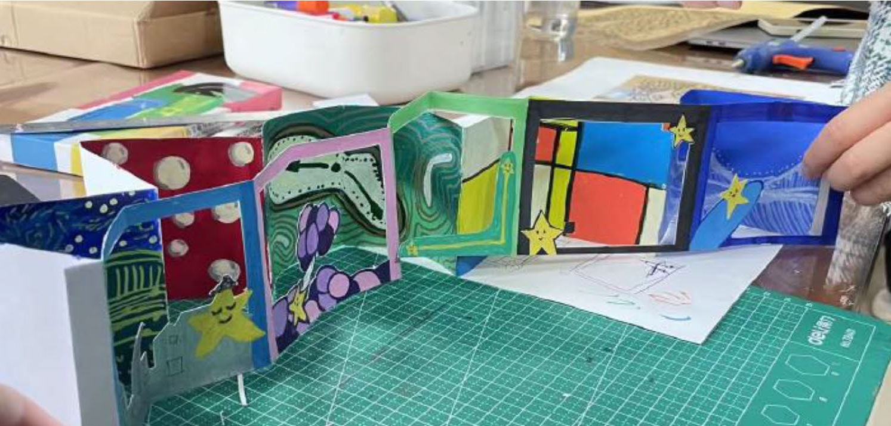
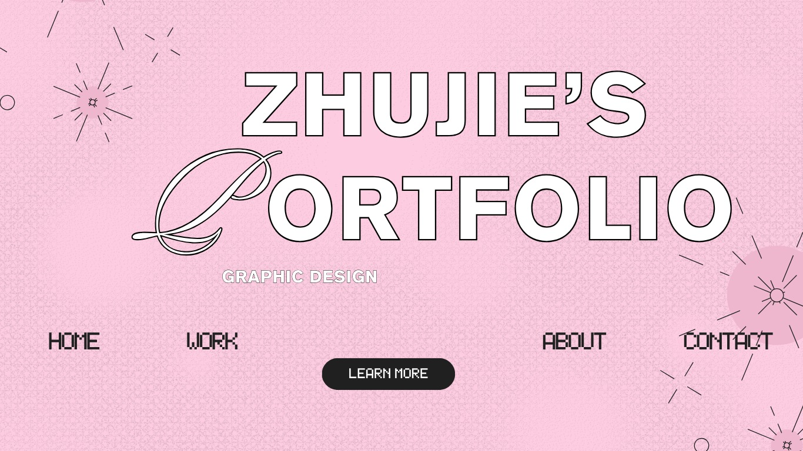

Star Wonderland

An illustrated handmade book with folded spaces, bold colour and a small star character connecting the scenes.
View project →Soft heart. Wild ideas.
Soft heart.
Wild ideas.
I like playful images, handmade details and ideas that begin with a little curiosity.


An illustrated handmade book with folded spaces, bold colour and a small star character connecting the scenes.
View project →
A restaurant concept that connects Suzhou food culture with courtyards, paths and a group of small buildings.
View project →
A set of studio studies using repeated marks, texture, handmade stamps and overprinted colour.
View project →
A shelter study that develops a geometric composition into connected spaces for climbing and resting.
View project →My name is zhujie, and I am studying Graphic Design and Media at PSB Academy. I enjoy poster design because a good image can catch attention and give people new ideas. I want my work to feel lively, thoughtful and full of personality.
My earlier projects explore spatial design, pop-up books and printing. I bring that interest in structure and making into my graphic design studies.
View my resume →